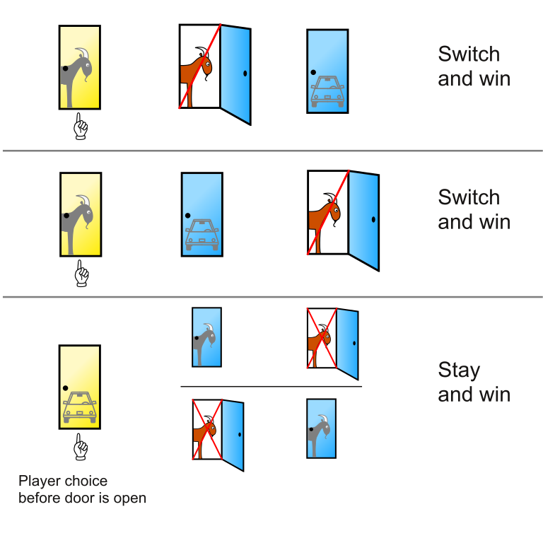
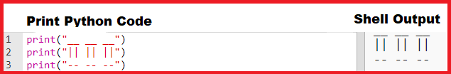

The Monty Hall Problem
Grey overlay
Pink
Green
Blue
Cream
Liliac
Purple
Yellow
Objectives
Developing the Programming and Development and Algorithm learning strands, specifically:
- Understand the difference between, and appropriately use if statements when checking doors in your simulation.
- Use variables and relational operators within a loop to govern the end of your Monty Hall Problem game.
- Designs solutions (algorithms) that use repetition and two-way selection i.e. if, then and else.
Introduction: The Monty Hall problem
Document It
- Watch the video.
- Talk with the person next to you about the following questions:
- What is the problem?
- Should you swap, stick with your choice or does it make no difference?
- What is the correct choice? Can you explain why?
Learn It: The Monty Hall Problem
- The Monty Hall Problem is probability puzzle based on an American TV game show "Let's Make a Deal" and is named after its host, Monty Hall.
- The problem was originally posed (and solved) in a letter by Steve Selvin to the American Statistician in 1975.
- The problem was as follows:
Suppose you're on a game show, and you're given the choice of three doors: Behind one door is a car; behind the others, goats. You pick a door, say No. 1, and the host, who knows what's behind the doors, opens another door, say No. 3, which has a goat. He then says to you, "Do you want to pick door No. 2?" Is it to your advantage to switch your choice?
- Do you think you should switch your choice or stick with your 1st choice?
- You and most people think they should stick.
- But as the video above video shows contestants who switch have a 2/3 chance of winning the car, while contestants who stick to their initial choice have only a 1/3 chance.
- Paul Erdos, one of the most prolific mathematicians in history, remained unconvinced this was true until he was shown a computer simulation demonstrating the predicted result.

- The image shows the three initial configurations of the game. In two of them, the player wins by switching away from the choice made before a door was opened.
Code It - List Popping
- Using Python we're going to make our own Monty Hall Problem game.
- First of all we need to learn a new command when using lists, .pop().
- Pop is used with lists to "pop off" or delete the last item in a list.
- Example code for popping a list can be seen in the Trinket below:
- Experiment with the code above to change the list and add new items to it.
- Try using .pop(3) this will delete the 3rd element of the list.
Code It - The Monty Hall Problem Simulation
- Now it's time to do our own simulation of the Monty Hall Problem, to prove that you should always switch your choice.
- Your going to complete some code so that you can simulate 10000 games of the problem at a time.
- You'll then see the probability of the two choices of switching and staying.
- Use the below Trinket and tasks to help you complete the badges for this week.
Badge It: Silver
- Using the Trinket above as a starting point and using the comments to guide you, make a simulation of the Monty Hall Problem in python.
- It should end up around 2/3 winning with switching and 1/3 with staying.
- Screenshot your complete code for the Silver badge.
Badge It: Gold
- For Gold you are going to comment on a version of the game where you play a round of the game like a player would in real life.
- Modify the code below to add a comment to each line, using a #, indicating what is happenning on that line.
- For example, for door = [1,2,3] you could add # A list called door is created containing the integers 1,2 and 3.
Badge It: Platinum
- Using the code given to you in the Gold badge add print commands to show a visual version of your doors at each stage of the game.
- Use google to research ASCII art to see how you can use characters to make simple graphics.
- An example output is shown below:
